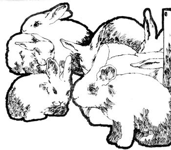
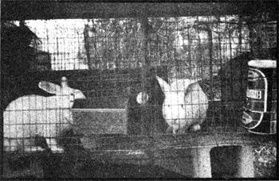

Inspired by Mother's repeated promptings to raise rabbits, we finally made the jump out here in California. Mother, however, didn't tell all, and we soon ran into some problems I hadn't expected (and wouldn't have had sense enough to ask about anyway).
First things first: Build or buy your hutches before you get rabbits. The cardboard box accommodations we provided the first few days were a heap less than satisfactory. Knocked down wire cages cost about $7.50 per rabbit at that time and we couldn't afford them. Eventually, we prepared suitable lodgings by modifying some scrounged wire chicken cages. Almost anything will do for a pen if it has wire floors, 30" X 36" of floor space for each doe, and a ceiling at least 15" high.
The self-cleaning wire floor I installed in my rabbits' quarters is half-inch galvanized grid, the smallest practical size and I think most comfortable for a new litter. Many commercial raisers use the larger 1/2" X 1" mesh, which lets the animals' droppings fall through more readily,. (The walls cap be made of 1" X 2" netting.)
Before you construct the floor, incidentally, check the galvanizing of the wire for a top and bottom. The grid is dipped in a molten solution during its manufacture and the drips harden into sharp spikes which-if allowed to point upward will give your bunnies sore hocks. (Some brands, by the way, drip sideways and so have no "up" or "down".)
A handy feature for my bunny pen is a door that's larger than the opening it covers, mounted on the inside, hinged along the top, and made to swing inward. That way, in the event that you ever forget to latch a cage, the rabbit won't escape and gleefully nibble your vegetables to nubbins.
Rather than pay $1.25 each for crockery watering bowls, we used some aluminum pans we already had available. They weren't a rousing success by any means. Our does have never given us many problems, but the buck (George) is super mischievous and as soon as our backs were turned he'd upend his waterer, pick it up in his teeth and toss it playfully around the pen with a flip of his head. Authorities insist that rabbits should have clean, fresh water before them at all times so, to prevent George from emptying his pan every time we left him unattended, we wired it to the cage. The rest of the day we could hear the frustrated scrabbling's of our buck as he tried in vain to overturn the container. I chuckled, muttered "Outwitted the beastie!", and grinned victoriously to myself as I slipped into sleep that evening.
During the night, however, George taught himself to use the pan for a toilet a procedure which the neighbors found very entertaining and quite comical to watch. Unfortunately, fecal contamination of food and/or water gives bunnies coccidiosis, and a rabbit with that disease isn't amusing at all. The condition is caused by a protozoan and after producing symptoms of severe diarrhea, listlessness, potbelly, and anemia-often results in death.
My response was a trip to the friendly feed store, where a cash outlay of $1.26 made me the owner of three dewdrop waterers. In commercial rabbitries these small brass devices -one inch long and half an inch in diameter-are screwed into a long water pipe that runs between rows of cages placed back to back. In the center of each waterer is a small plunger which the rabbit pushes with its tongue to release a dribble of liquid.
With my tiny herd, though, I obviously don't need a full scale plumbing system. My substitute for each bunny is an empty three pound honey can with a hole punched in the bottom to receive one of the dewdrop waterers. A small washer cut out of an old inner tube prevents leakage.
Each of my honey tins comes with one of those non biodegradable plastic covers which, horrible as it is, can nevertheless be snapped on the can to prevent bugs and trash from getting into the water. I poke a pinhole into the lid to prevent a perfect seal, since an airtight container with an outlet in the lower end will release only enough liquid to create a vacuum equal to the ambient atmospheric pressure. In other words, ya gotta let air in the top to get water out the bottom. (Cans with reusable metal lids are less common than they used to be but would probably be preferable because of the rabbit's tendency to gnaw everything within reach. See E.P. Bell's article In this issue.-MOTHER.)
All three members of my herd now nurse at tin-can mammaries with brass nipples. They cost a third of what crockery does and work a jillion times better.
Once I had my rabbits settled in their hutches, I could think about getting them into production and at that point all the authorities I consulted ganged up on me and recommended record keeping. I have to admit it's handy to know when a doe is ready to kindle, when her litter will be weaned, and when the mother should be rebred. I, however, am the world's worst maker of notes. If I'm interrupted I forget to jot down a record at all and if 1 do write something I lose the paper and if neither of those things happens I either don't have a calendar handy or 1 miscount the days. Faced with all that paperwork, therefore, I whimpered and cast around for a less painful method of managing my bunnies and here it is.
Fellow rabbit raisers, save yourself hassle and higher math by using my (ta taa! You ready for this?) 73-day system. Breed your doe and write a "1" on the card you've mounted on her cage for that purpose. When you feed her next day, write a "2" in the space next to the "1 ". Each day thereafter, change the lower number by adding two to it. (That is: On the third day, you'll add "2" to "1" which is-obviously-the lower of your first two numbers, "1 " and "2". Write down the "3" and cross out the "1 ". Then, the next day, add "2" to the new lower number-"'2"-and write down the "4", cross out the "2", etc.) From day 14 to day 21, harvest the litter the doe has with her (the first time through this routine, of course, she'll be alone). The doe will kindle on approximately day 30. After day 73 start over by changing your "72" to a "1" and that's your signal to rebreed the female.
Such a schedule is easy to keep and should give you the best overall feed conversion ratio (most meat per pound of rations) consistent with the health of your does. You'll be breeding each female while she's still rearing young and getting five litters a year from every female. (Don't worry about overtaxing your rabbits' reproductive powers. Subjects at experiment stations have produced nine litters a year without harming themselves.)
Profitable commercial operations attain yearly litter weights of at least 140 pounds per working doe, so the homesteader's goal of 100 pounds each isn't unreasonable. That live weight will dress out to 50 pounds of good eating annually, or-if you keep two does eight pounds of meat a month. The 25 to 35 hides from the litters of each female will, in addition, provide more fur mittens than you can wear in a lifetime.
About costs: My bunnies are fed good-quality rabbit pellets and all, the greens-garden thinnings and weeds-they'll eat at a sitting. The buck costs me 200 a week to feed. I don't have numbers on the does yet, but I expect that the first several litters will set me back about 604 per dressed pound. Expensive? Yes and no. Commercial raisers can cut that figure to about 404 but the supermarket price of rabbit meat is $1.10 a pound. And, by staggering ;he breeding times of your does, you can harvest the litters directly to table without refrigeration. Try that with your beef! (Feed prices vary locally and over a period of time always seem to go up. Here In semi-rural North Carolina, a 25 pound bag of rabbit pellets currently sells for around $2.60.-MOTHER.)
Buying pellets does allow the homesteader to get started with rabbits easily, but is still the least preferred method of feeding bunnies in the long run. As part of our move toward self sufficiency, we'll want to raise our own rabbit feed and once we get into bunny nutrition and begin the organic growing of grains, alfalfa, and hay, we'll have completed the loop and created a closed system. At best, then, prepared rations are a temporary crutch and commercial statistics only a yardstick.
To conclude, let's look at the homestead rabbit operation with an ecologist's eye. By growing bunnies for your table you'll be eliminating refrigeration (power pollution), handling (an unnecessary link between you and your food), transportation (and a whole multitude of pollution sources along with it), packaging (solid waste disposal), and on and on and on. Isn't raising your own a kinder way to live on this planet than buying rabbit-or any other-meat at a supermarket?.
|
 |
 |
|